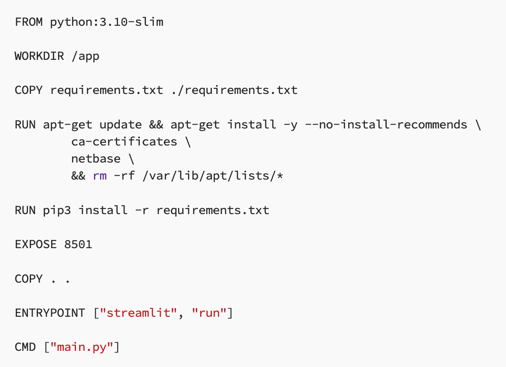
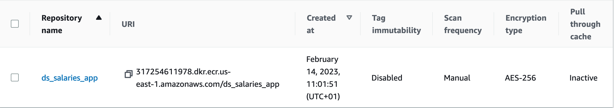
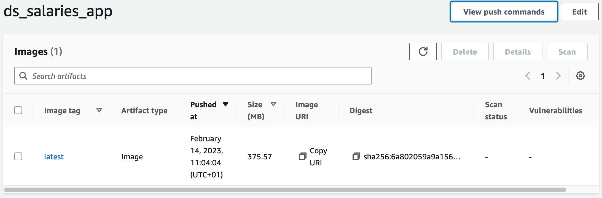
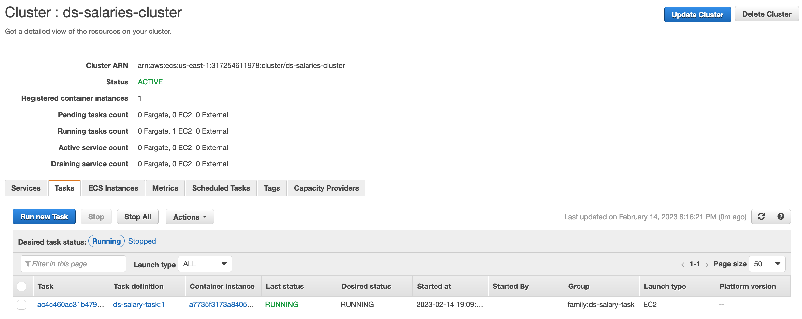
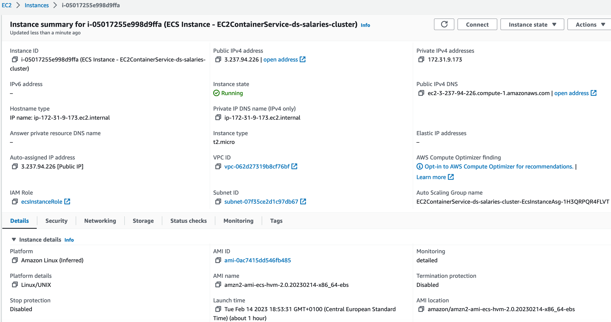
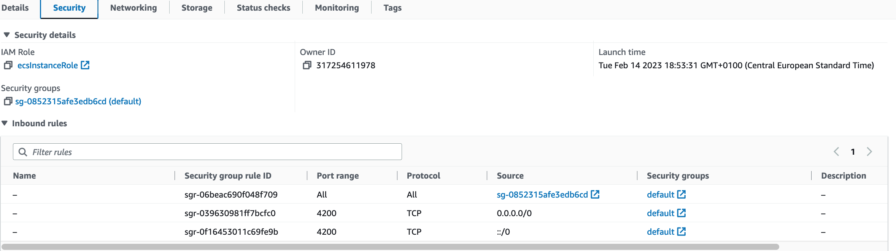

Project information
- Category: Streamlit Application
- Project Repository: Data Science Salaries Repository
- Project date: January, 2023
- Application Link: Data Science Salaries Application
Project Introduction
Before embarking on the journey of a job search, it is important to know current trends in the industry, as well as a salary range to be able to negotiate during your job hunt. This application will give you detailed insights of salary trends in the Data Science domain in the last 2 years. It is designed to help you understand how different factors, such as location, experience level, and employment type, impact salaries in the field.
Technologies Used
- Python
- Numpy
- Pandas
- Matplotlib
- Seaborn
- Plotly
- Streamlit
- Docker
Methods Used
- Data Preprocessing / Data Cleaning
- Data Analysis
- Descriptive Statistics
- Feature Engineering
- Data Visualization
- Application Containerization
- Application Deployment
Deploying the App using Docker, AWS ECR and EC2
What are the steps?
The idea is to deploy the application using Amazon Web Services (AWS) and its cloud based products. In order to have a fully functioning application on the cloud, these are the steps I will follow:
- Create a Docker Image of my application and its dependencies
- Store the Docker Image on Amazon Elastic Container Registry (ECR)
- Deploy my container image to Amazon EC2
A Docker Image is a highly efficient, and convenient way to package everything you need to run your software: from code, libraries, configuration files, an other variables — and then distribute that package, and run the software in a containerized environment. It saves up space, a lot of it. And unnecessary error handling headaches.
Creating a Docker Image is preceeded by creating a set of instructions in a .txt file called the Dockerfile. The steps in creating a Dockerfile are very easy to follow, and can also be found on the Streamlit website: deploy docker. By following those instructions, I got the following Dockerfile:
After creating the Dockerfile, we run the following command on the terminal in order to create a Docker Image (make sure you run the command from the app folder). The name of the app is optional.
docker build -t my_streamlit_app .
After a minute a two, it is done! Your Docker Image is created, you can check the image by going to Docker Desktop, or just running the following command in the terminal: docker image ls
You can now containerize it, and run it locally to check if everything is in order: docker run -p 8501:8501 my_streamlit_app
Check out your Docker Desktop, there you will find the newly created image of your app, and it says it is in use. Click on it, there you will see the port 8501:8501 which then will take you to your application.
Pushing the Docker Image to AWS ECR
This part technically requires 2 steps:
- Creating a repository for your application
- Pushing the Docker Image to that repository
Creating a repository for your application is simple. Login to your AWS account, go to ECR, and create a private repository.
However, pushing your Docker Image to the repository requires additional steps:
- Install AWS CLI on your machine. With this handy tool you will be able to control multiple AWS services from the terminal
- Go to your IAM management, and create a new user which will only be used for out project
- In the Permission section choose Attach existing policies directly and in the below list selct AmazonEC2ContainerRegistryFullAccess.
- Once the user has been created, select it and go to Access Key. There you will be able to retrieve your Access Key and Secret Access Key — which are not to be shared. Keep these at a safe place.
- In the terminal type the following: aws configure - It will prompt you with four questions (Access Key, Secret Access Key, Region Name, Default Output Format
- Login to your user through the terminal. There is a handy little shortcut in the upper right corner of your repository View Push Commands— it shows you already created links which you can just copy and paste to your terminal:
First one is authentication. We already have our image so we can skip the second command. The third one tags your Docker Image, and the fourth command pushes your image to the repository:
There we have it. Let’s now proceed to deploy our app.
Deploying the application
The application will be deployed using the Amazon ECS. These are steps to follow:
- Create an ECS Cluster which represents the group of your container instances which will be used to run tasks we will define. I created a cluster using the EC2 Linux + Networking Template.
- In the Cluster Configuration section you need to define your cluster name, and select your instance type (I chose the t2.micro). Use the default VPC from the drop down menu, and add a subnet (I used us-east-1a). Make sure to enable the Auto assign public IP, and chose a default security group. Now just create the cluster.
- Once your cluster has been created, chose the Create Task Definition option, and select EC2. Enter the name of the task you wish. The following options are to select the task memory and task CPU (my choices were 100MiB, and 1 vcpu)
- Add a container to your task: select a name you wish, and paste the Image URI into the Image box. It’s important to select the port mapping as the ones you used in your Dockerfile. Once finished, click add, and create task.
- Now we need to run the task by going to our cluster, and selecting the Run Task option. Launch tpe should be set to EC2, and task definition as previously created, as well as the cluster you created. Now we just run the task. 
- Check the EC2 instances that are running: 
- In order to run the application, copy the Public IPv4 address, and add the :port_number you entered when creating the task definition.
- If the application is now showing, you can adjust the Security inbound settings of your instance, the option next to Details: 
- Run the application just as before, and enjoy!
Add your own custom rules, with the port you previosly selected, and add both IPv4 and IPv6.